Introducción
El cine es una forma de expresión, una herramienta de comunicación, un método para conectarnos emocionalmente los unos con los otros. A lo largo de la historia, se ha utilizado como propaganda, para divulgar distintos mensajes, críticas y opiniones. Como creador, sabes que va a haber alguien que vea (y escuche) lo que estás tratando de comunicar y esperas una reacción al respecto. Como espectador, reflexionas sobre lo que ves y formas una opinión propia.
Se pueden transmitir mensajes sociales mediante cualquier obra audiovisual, independientemente de su género. Pero es cierto que en el caso de la ciencia ficción, la libertad temática (la fantasía no tiene límites) facilita la invención de historias, con sus propios universos y sistemas políticos, que no son más que un reflejo de nuestra propia sociedad. Se trata de un género al que empezó a aludirse en el ámbito cinematográfico en la década de 1920 y como su nombre indica, está directamente relacionado con los campos de las ciencias físicas, naturales y sociales. El crítico cinematográfico francés Gérard Lenne, considera que la ciencia ficción consiste en un subgénero del género Fantástico, el cual engloba otro subgénero, el fantástico (con minúsculas). La diferencia entre ambos está en el tipo de peligro que abordan: mágico en el fantástico y “realista” en la ciencia ficción.
Este “realismo”, no emana de la temática (que generalmente no corresponde con hechos vividos, como las invasiones alienígenas o los viajes en el tiempo), sino de la credibilidad narrativa construida, siempre respaldada firmemente en la ciencia y en sus avances o en sistemas políticos complejos y factibles, pues podrían llegar a ser aplicados o se inspiran en aquellos que ya lo han sido.
Imaginario social y orígenes de la ciencia ficción en el cine
Los imaginarios sociales podrían definirse como aquellas representaciones colectivas que hacen visible la invisibilidad social. Según José Luis Pintos, un reconocido estudioso de este ámbito, estos serían “aquellos esquemas, construidos socialmente, que nos permiten percibir algo como real, explicarlo e intervenir operativamente en lo que en cada sistema social se considere como realidad”. La ciencia ficción expresa las ideologías y aspectos que preocupan a la sociedad en el presente. De este modo, las películas del género y también la lectura que se hace sobre ellas participan en la construcción de un imaginario social.
El género de ciencia ficción ya existía durante la época del cine mudo, generalmente en formato de cortometraje, estas cintas solían tener una temática tecnológica, pero su enfoque estaba puesto en un punto de vista humorístico. El hecho de considerarlas “ciencia ficción” y no “comedia” se basaba en aspectos técnicos, como los efectos especiales. Durante los años 1920, algunos directores de cine europeos empezaron a utilizar este género cinematográfico para realizar predicciones y comentarios sociales, fue entonces cuando pasó a ser de vital importancia no solo los aspectos técnicos, sino el mensaje que querían transmitir con estos films y su impacto a nivel social y cultural.
Desde entonces, se han utilizado estas películas para reflejar aquellos miedos y preocupaciones sociales del momento, así como las aspiraciones y esperanzas para un futuro que proyectan como lejano pero que realmente no lo es tanto. Conforme avanzan los años, estos miedos van cambiando, influidos también por los hechos históricos vividos y por los nuevos avances científicos y tecnológicos, es por ello que su representación en la gran pantalla también varía según la época. Con este ensayo, se pretende realizar un análisis general sobre la evolución del cine de ciencia ficción desde sus inicios hasta la actualidad, mediante la selección de las películas más aclamadas del género, así como su contexto histórico, su impacto social y lo que su mensaje nos transmite sobre sus espectadores.
Inicios: Metrópolis (1927)
“Metrópolis” es una película muda alemana de 1927 dirigida por Fritz Lang e inspirada en una novela de 1926 de la autora Von Harbou. Nos narra una historia futurista situada en una gran ciudad llamada Metrópolis, en el año 2026. Esta ciudad está dividida en tres niveles: la ciudad como tal propiamente dicha (situada en la superficie), una ciudad subterránea y una zona de máquinas con complejos mecanismos que funcionan ininterrumpidamente para el correcto funcionamiento de toda esta organización. Existe una clara jerarquía que divide a sus ciudadanos en dos grupos: por un lado tenemos a la clase alta, aquellos que son propietarios y viven en la superficie; por otro lado tenemos a la clase obrera, los cuales viven en la ciudad subterránea y trabajan bajo unas pésimas condiciones en la zona de máquinas.
La historia comienza cuando María, una joven que defiende la causa de los trabajadores, sube a los jardines de la ciudad con un grupo de niños para mostrarles cómo es la vida en la superficie y quiénes viven allí. Esta es automáticamente expulsada por los guardias, pero Freder, el hijo del presidente-gobernante de la ciudad, la ve y queda completamente enamorado de ella. Decide seguirla hasta el subsuelo y allí descubre, horrorizado, cómo son las condiciones de vida de estas personas e incluso tiene una visión de la propia máquina comiéndose a estos trabajadores, ya demasiado consumidos por su labor diaria. Tras expresarle a su padre su descontento con esta situación tan injusta, obteniendo una respuesta negativa de este a sus peticiones, decide volver al submundo de los obreros, esta vez para relevar a uno de ellos y experimentar cómo es el manejo de la máquina. María, explica cómo el entendimiento entre estos dos grupos sociales solo podrá ser posible con la figura de un mediador (el corazón) que ponga paz entre la cabeza (aquellas mentes creadoras, los propietarios) y las manos (los que ejecutan estos proyectos, los obreros). Este discurso lo escuchan también Johan Fredersen (el presidente) y Rotwang (un científico), ambos, preocupados por una posible revolución a causa de las palabras de María, deciden secuestrarla y suplantarla por un robot exactamente idéntico a ella. Este robot, les dice a los obreros que nunca llegará el mediador tan esperado antes mencionado, por lo que toda esperanza por un futuro mejor es absurda. Esto siembra el caos entre los trabajadores, los cuales rompen la máquina corazón que sustenta al resto, provocando la ruptura de represas de agua y la inundación de la ciudad subterránea. En medio de todo el caos, el capataz se percata de que los hijos de todos ellos todavía se encuentran en la ciudad ya sumergida y todos ellos culpan a la robótica María por incitarlos a la violencia. Consiguen capturarla y la queman en una gran hoguera, descubriéndose así que se trata de un robot. Mientras, la auténtica María, ayudada por Freder, rescata a los niños y huye del científico, que intenta matarla. Finalmente, se reúnen el capataz de los obreros, el presidente, Freder y María, la cual le explica a este último que él es el corazón, el indicado para poner paz. Freder toma las manos de ambos representantes y las une, terminado con la disputa mediante el entendimiento entre empresarios y trabajadores.
El contexto histórico real de este film, fue la etapa posterior a la I Guerra Mundial, así como la Revolución Rusa, el nazismo en Alemania y la entrada al poder de Mussolini en Italia. Esto se ve reflejado en la película, haciendo hincapié en cómo los obreros son deshumanizados y reducidos a simples piezas de una gran máquina, algo bastante común en cualquier país industrial europeo de la época. La interpretación de su mensaje también se divide en dos grupos: aquellos que la consideran un elogio al fascismo y los que la perciben com una crítica de él. Lo cierto es que existen similitudes entre la situación planteada y la Italia de 1927, en la que “el cerebro” y “las manos” trabajaban (aparentemente) en armonía gracias a un mediador, que puede interpretarse tanto como la figura de Mussolini particularmente o el fascismo en su totalidad. De hecho, el propio Goebbels (que reconoció haber visto la película con Hitler), apelaba en sus discursos a la importancia de esa figura que debe actuar como “corazón”, como forma de propaganda totalitaria. Lo cual demuestra que, una vez más, la ficción no se aleja tanto de la realidad, más bien es un reflejo de ella. Además, a lo largo del largometraje son frecuentes las referencias religiosas, desde el propio nombre de María, la figura de un salvador, el relato de la torre de Babel, la figura de un falso profeta (el robot) y la representación teatral de los siete pecados capitales que tiene lugar en la escena localizada en un burdel. Además, se trata de una de las primeras representaciones del temor a la industrialización deshumanizadora y a la tecnología avanzada, un tópico que seguirá repitiéndose a lo largo de los años e incluso sigue haciéndose en la actualidad.
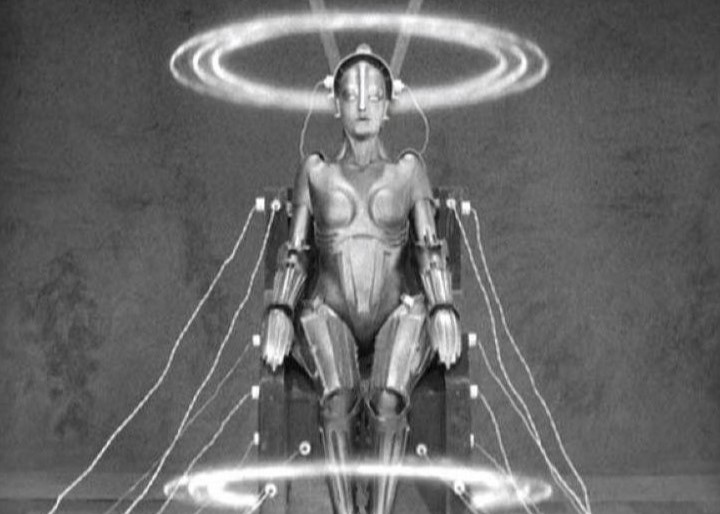 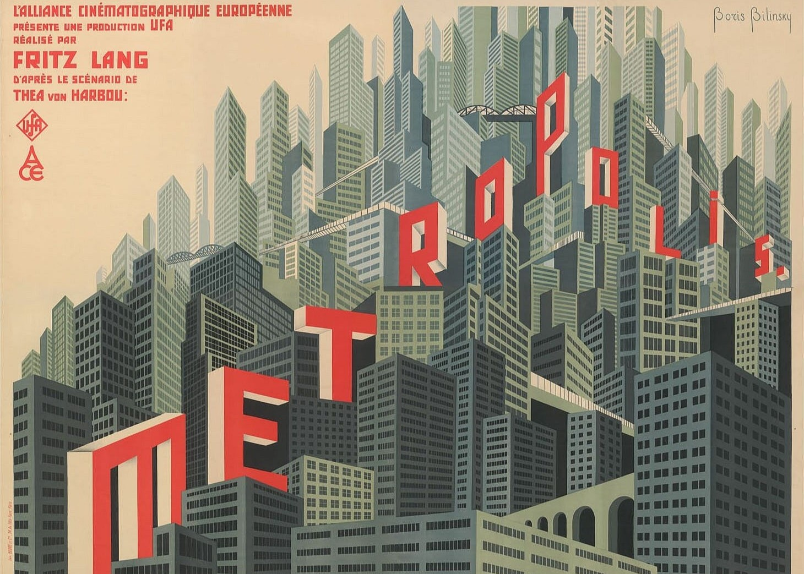 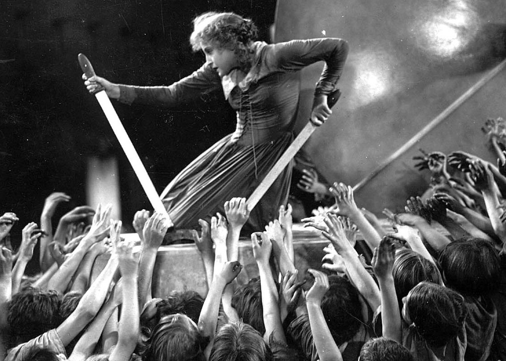Guerra Fría: “Ultimátum a la Tierra” (1951)
“The Day the Earth Stood Still” o “Ultimátum a la Tierra” en España, es una película estadounidense de 1951 dirigida por Robert Wise que fue premiada con un Globo de Oro en 1952 a la mejor película promotora del entendimiento internacional.
La historia comienza en Washington D.C. con el avistamiento de un objeto volador no identificado (OVNI), que resulta ser una nave que aterriza en un parque de la ciudad. De ella sale una figura con ropa metálica y un robot llamado Gort. Los soldados, alertados, se arman debido a un posible ataque por parte del extraterrestre, pero este viene en son de paz. El objetivo de Klaatu, el nombre con el que se presenta este ser, es reunirse con los líderes y representantes de todas las naciones en la Tierra para darles un mensaje, pero el presidente de EE.UU, le explica que no es posible debido a los conflictos que existen entre algunos países (haciendo referencia a la Guerra Fría). Entonces, Klaatu decide infiltrarse entre los ciudadanos en busca de algún científico al que poder transmitir su mensaje. Se instala en un albergue, donde conoce a Bobby, un niño que vive allí con el que va a visitar a Jacob Barnhardt, un reconocido matemático al que le cuenta el objetivo de su misión en la Tierra, el cual es impedir que los humanos inventen armas nucleares más poderosas que la bomba atómica, pues resultaría una amenaza para el resto de planetas, que podrían ser también destruidos. Los militares, declaran una cuarentena en Washington y prohíben la salida de cualquier ciudadano para poder capturar al extraterrestre, al que finalmente terminan disparando, provocando así su muerte. Pero Gort, utilizando la avanzada tecnología de su nave, le devuelve la vida de manera temporal por lo que este puede transmitir su mensaje al resto: la Organización Interplanetaria ha creado unos robots especiales cuya misión es garantizar la seguridad de todos en el universo, cuya función es patrullar por los distintos planetas y actuar automáticamente contra el agresor ante algún indicio de violencia, asegurando así la paz sin la necesidad de contar con ejércitos y armas.
La situación social y política de esta película es la Guerra Fría, lo cual se ve reflejado en el propio filme, dotándolo de un fuerte carácter realista tras la mención de hechos históricos como la II Guerra Mundial y títulos de películas estrenadas durante esos años. Además, la “Organización Interplanetaria” mencionada es una clara alusión a la aquel entonces recién formada ONU. El principal mensaje de esta película es alertar a los ciudadanos de los peligros del comunismo, así como el miedo a una III Guerra Mundial en la que se utilicen armas nucleares, especialmente tras los ataques producidos en 1945 a Hiroshima y Nagasaki. Para ello, utilizan la figura de un extraterrestre para representar “al otro” (los socialistas), algo bastante común en el género de ciencia ficción, pues refleja y justifica este miedo hacia “los otros”, es decir, aquellos que no son como nosotros, representándolos como seres malvados. Si bien es cierto que en este caso, el alienígena tiene aspecto humano y de hecho, la película lo enfatiza mostrando radiografías exactamente idénticas a las de un humano, simbolizando que el enemigo, “el otro”, también puede ser una persona, alguien como nosotros.
Los avances científicos, al igual que la latente preocupación de los seres humanos por estos y su evolución en un futuro, también están muy presentes. Cuando disparan a Klaatu, este se cura con un bálsamo sanador y afirma que la esperanza de vida en su planeta es de 130 años, haciendo hincapié en estos avances a los que entonces los científicos sólo podían aspirar. A pesar de estas ventajas, las creencias religiosas siguen vigentes en esta historia, expresando que pese a los avances científicos, siempre existirá un ser superior (Dios) a ellos, como expresa Klaatu en un diálogo después de que Gort le devuelva la vida: “Es algo temporal, pues hacerlo de forma permanente solo le corresponde al espíritu todopoderoso”. De hecho, la propia figura del extraterrestre podría compararse con la de Jesús, pues cuando este aparece uno de los personajes menciona la Santa Navidad (el nacimiento de Jesús), además adopta el nombre de Carpenter (carpintero, el oficio de Jesús), pretende transmitir un mensaje de paz, cuando lo matan cae rendido con los brazos abiertos en forma de cruz y al poco resucita.
Otro detalle a destacar que relaciona directamente esta ficción con la realidad es el uso de la desinformación y la manipulación por parte de los medios de comunicación para generar caos y confusión en la sociedad, implantándoles un estado de alerta constante y desconfianza ante cualquiera que no sea estadounidense, al igual que hicieron durante la Guerra Fría. Esto podemos verlo en cómo describen al extraterrestre como peligroso, llegando a incluir ilustraciones de invasiones en los periódicos, cuando se trata de un ser pacífico. También expone la tendencia a usar la tecnología con fines bélicos, en lugar de utilizarla para hacer el bien, algo que se muestra en una conversación entre Klaatu y Bobby, en la que tras descubrir que la nave funciona con energía atómica, el niño exclama que pensaba que únicamente se podía utilizar en la creación de bombas. Por otro lado, la escena del apagón eléctrico que paraliza a todos los países, ejemplifica la dependencia de la energía eléctrica y sugiere la búsqueda de otras fuentes, como la energía nuclear (algo que se logró en EE.UU. tres meses después del estreno de la película). La película concluye con un mensaje y una solución para la búsqueda de paz, pero resulta algo contradictorio pues esta paz se obtendría mediante el temor (implantado) de los seres humanos hacia estos robots.
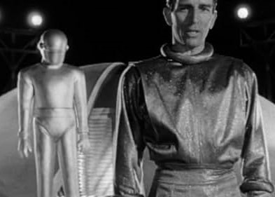 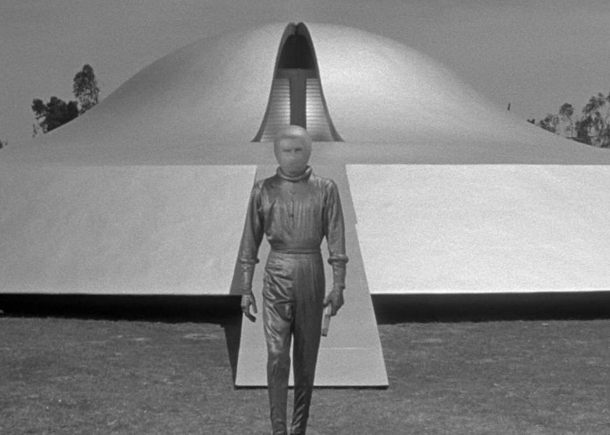 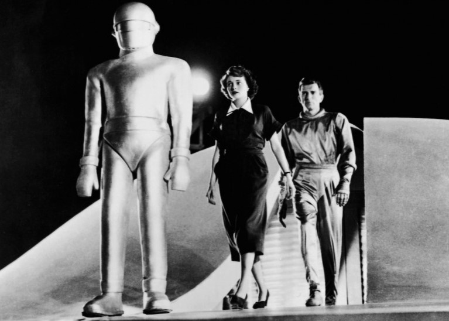Años 60 y 70: “Cuando el destino nos alcance” (1973)
“Soylent Green” o “Cuando el destino nos alcance” en España, es una película estadounidense estrenada en 1973 dirigida por Richard Fleischer. Está basada en la novela “¡Hagan sitio!, ¡hagan sitio!”, publicada en 1966.
La historia nos ubica en la ciudad de Nueva York en el año 2022, donde se nos muestra un mundo completamente sobrepoblado e industrializado, con numerosos desastres ecológicos y sin espacios naturales para cultivar o cazar. La situación económica también es terrible, la clase media ha desaparecido y las diferencias entre ricos y pobres son abismales. Únicamente los más privilegiados disponen de alimentos tal y como los conocemos, siendo la carne uno de los más valorados, debido a su escasez. El resto de ciudadanos, por el contrario, solo pueden acceder a un alimento en forma de galleta distribuido por el gobierno y por “Soylent”, la empresa que los produce.
Robert Thorn, un policía que vive con su amigo Sol Roth, un anciano exprofesor, es llamado para investigar el asesinato de uno de los principales accionistas de Soylent. Cuando este comienza a investigar, descubre que la última galleta creada por dicha compañía, no está hecha de algas, como ellos aseguran, están hechas de carne humana y el asesinato del accionista se debe a que este se negó a seguir invirtiendo en ello. Por su parte, Sol, decide aplicarse la eutanasia (completamente legal en este futuro distópico que nos presenta la película) porque le produce mucha tristeza la decadencia del mundo y su contraste con lo que un día fue. Finalmente, Robert consigue escapar de aquellos que lo persiguen y contar la verdad a los ciudadanos de la elaboración de esas galletas.
Es importante resaltar el contexto social y político de Estados Unidos en 1973 para una mayor comprensión del mensaje que pretende transmitir la película. Precisamente en ese año, las tropas estadounidenses se retiraron de Vietnam, dejando profundas divisiones en la sociedad estadounidense y dificultades económicas. Además, tuvo lugar una crisis energética que generó una gran inflación cuando los países árabes de la Organización de Países Exportadores de Petróleo (OPEP) decidieron dejar de exportarlo a EE.UU. debido a su apoyo a Israel durante la Guerra de Yom Kippur. Este temor, tan común en la población, al agotamiento de recursos se muestra de una forma muy llamativa en la película, planteando una situación extrema en la que no disponen de ningún tipo de recurso. Además, también pretende hacer reflexionar sobre las consecuencias de la industrialización del siglo XX, la contaminación y el calentamiento global, como podemos comprobar en uno de los diálogos de la película en el que se dice que apenas existen algas porque el mar se está secando y desapareciendo.
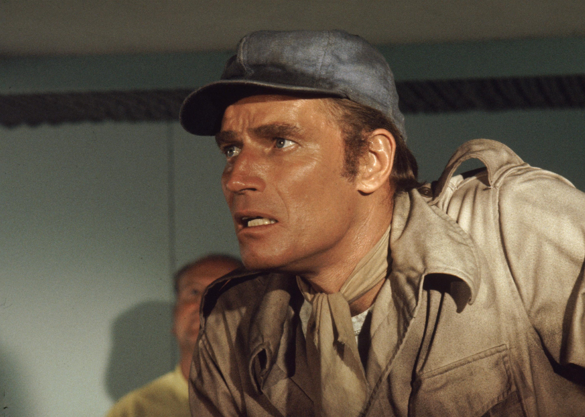 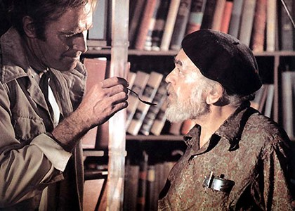 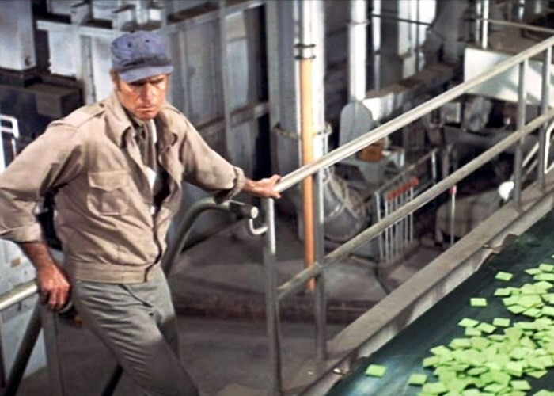Años 80: “Blade Runner” (1982)
“Blade Runner” es una película estadounidense que pertenece a la corriente neo-noir (un estilo que trata temas de actualidad utilizando elementos del cine negro), estrenada en 1982 y dirigida por Ridley Scott, obtuvo un gran éxito.
La acción transcurre en Los Ángeles, en el año 2019. Observamos una sociedad muy industrializada y avanzada tecnológicamente en la que conviven robots con seres humanos. A estos robots (muy parecidos a los humanos) se les denomina “réplicas”, y están hechos para trabajar como esclavos en la colonización de otros planetas. Cuando un grupo de ellos se revela, son declarados ilegales y las unidades de policía, que reciben el nombre de blade runners, tienen órdenes de acabar con ellos, denominando a esta acción “retiro” en vez de “ejecución”.
Rick Deckard, el protagonista, es un blade runner retirado al que le encargan la misión de terminar con un grupo de replicantes que han llegado a su planeta. Para distinguirlos de las personas, se les realiza una serie de preguntas y se analiza tanto sus respuestas como sus reacciones corporales. Además, se indica que estos robots tienen 4 años de vida, y este es el motivo por el que algunos de ellos se han revelado, pues quieren vivir más años. En su viaje en búsqueda de estos replicantes, Rick conoce a Rachel, una réplica especial. Ella no es consciente de su naturaleza de robot, ya que le han instalado recuerdos para que piense que es humana. Deckard va siguiendo una serie de pistas, hasta ir eliminando poco a poco a estos replicantes. En su lucha final con Roy, el líder de los replicantes, este termina salvándole la vida a Rick, pues no busca el conflicto, únicamente quería saber de dónde venía y cuánto tiempo de vida le quedaba.
En el año 2017, se estrenó “Blade Runner 2049”, una precuela de esta historia dirigida por Denis Villeneuve. Esta historia tiene lugar 30 años después de los acontecimientos de la primera, y esta vez sucede en California en el año 2049, pues nos muestra que la ciudad de Los Ángeles (donde transcurre la primera) está destruida. El replicante K (de una nueva generación más avanzada en la que no mueren) descubre que es probable que los replicantes puedan tener hijos humanos.
Al inicio de la década de los 80, el gobierno de Ronald Reagan inició un periodo de prosperidad económica en EE.UU. impulsado por las políticas económicas liberales. Se produjo la privatización de servicios públicos, ensalzando una imagen triunfadora del capitalismo americano (que en la película se muestra mediante los llamativos carteles publicitarios presentes en toda la ciudad).
Esta película pretende evidenciar las consecuencias ocultas bajo este optimismo: un gran número de población marginal y un futuro sometido por las grandes corporaciones, que usando los avances científicos y tecnológicos han convertido al ser humano en una mercancía más bajo su control. Los replicantes rebeldes, a través de esta estética agresiva y radicalista de la corriente punk, representan el anarquismo. En la versión de 2017, vemos cómo el rostro de K se muestra impasivo, reflejando ese vacío de una existencia dominada por un trabajo mecánico, como una especie de esclavo.
También menciona nuevos avances, como unos cultivos sintéticos que evitaron la hambruna en 2020, la existencia de asistentes virtuales (la novia del protagonista) y las holografías de celebridades difuntas como Elvis (algo que de hecho existe en la actualidad y son utilizadas para dar conciertos).
Podemos distinguir un cambio en el enfoque de ambas películas, mientras que la primera presenta un punto de vista alarmista y apocalíptico, la segunda plantea una visión más positiva de dichos avances. Mostrando así que la sociedad ya no tiene tanto miedo hacia la convivencia entre robots y humanos, sino que buscan una forma de coexistir y beneficiarse de ello.
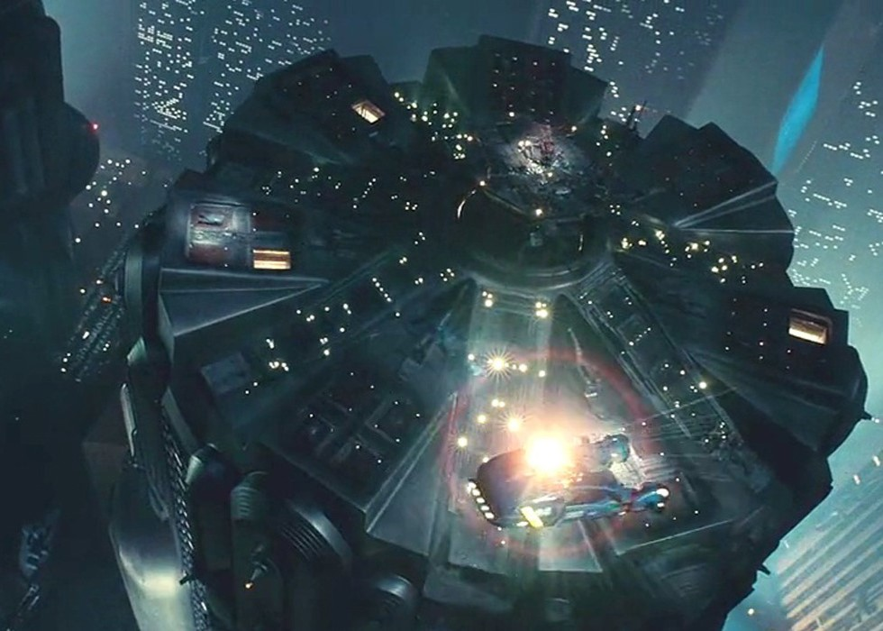 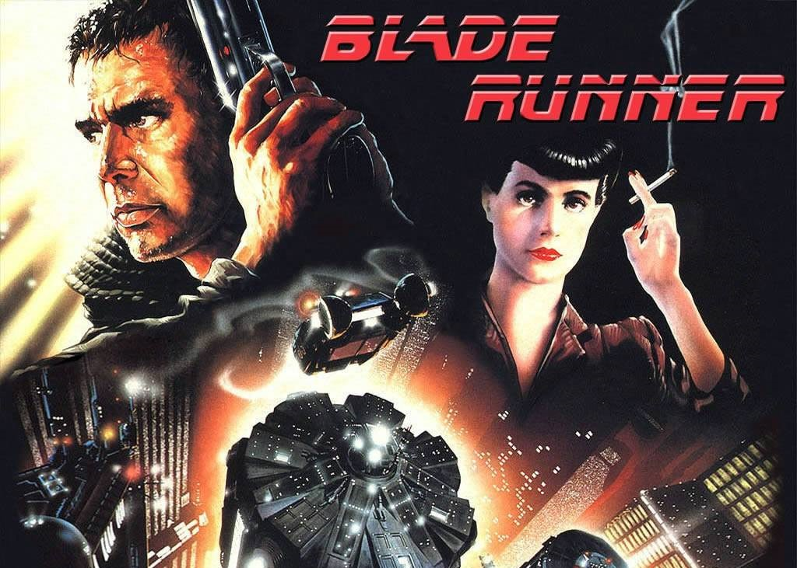 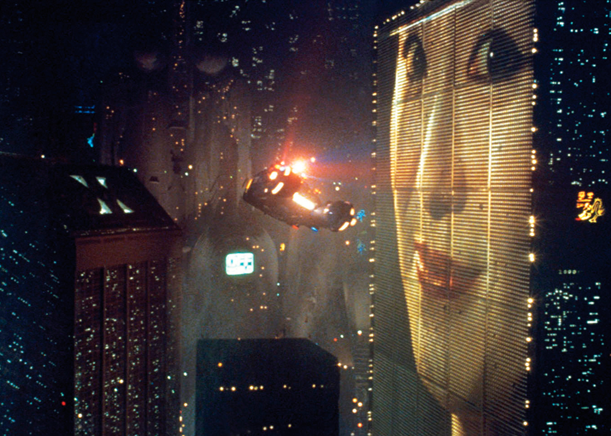Años 90: “Jurassic Park” (1993)
“Jurassic Park” o “Parque Jurásico” en España, es una película dirigida por Steven Spielberg y estrenada en 1993. Su trama está basada en el libro, que recibe el mismo título, escrito por Michael Crichton.
El paleontólogo Alan Grant y la paleobotánica Ellie Sattler se encuentran en una excavación en Montana cuando reciben la visita de John Hammond, el fundador de un parque de dinosaurios. Este necesita la aprobación de un grupo de expertos para obtener financiación para el proyecto y los invita, junto a otros especializados en este campo, a su reserva natural, situada en Costa Rica. Estos dinosaurios existen gracias a la clonación, mediante la extracción de restos de sangre de mosquitos fosilizados que en algún momento picaron a un dinosaurio. Al principio, ninguno está de acuerdo con esto, pues no les parece algo seguro. El único al que parece gustarle la idea es a Donald Gennaro, un abogado cuyo único interés es sacar dinero de la situación, siendo además el primero en morir por el ataque de un dinosaurio. Mientras todos visitan el parque, se desata una tormenta tropical que los deja incomunicados. Al mismo tiempo, el programador Dennis Nedry bloquea el sistema de seguridad para acceder a los laboratorios y robar embriones de dinosaurio para venderlos en otra compañía. Sin electricidad, los dinosaurios son liberados y empiezan a perseguir a los protagonistas. Finalmente, algunos consiguen escapar porque un T-Rex comienza a atacar a otros dinosaurios.
En los años 90, ya se habían logrado grandes avances en el ámbito de la ciencia y la tecnología. Internet comenzaba a expandirse, incrementando su impacto en la vida diaria y el transbordador espacial Endeavour realizó una misión destacada, dotando de una gran importancia al programa espacial de la NASA. Además, en el año 1996 un grupo de científicos del Instituto Roslin de Escocia consiguió clonar un mamífero a partir de una célula adulta por primera vez en la historia, se trata de la oveja Dolly. Esto despertó dilemas morales y éticos, los cuales se tratan precisamente en esta película, sobre si podría llegar a realizarse con humanos y hasta qué punto era correcto o no y si podría tener graves consecuencias (como nuevas enfermedades).
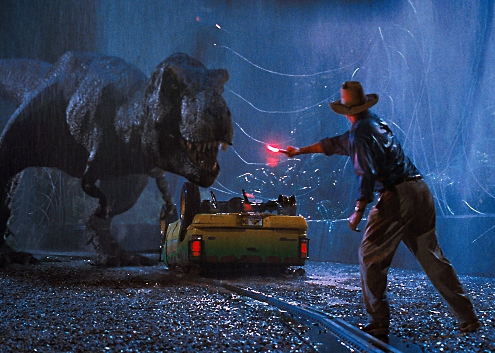 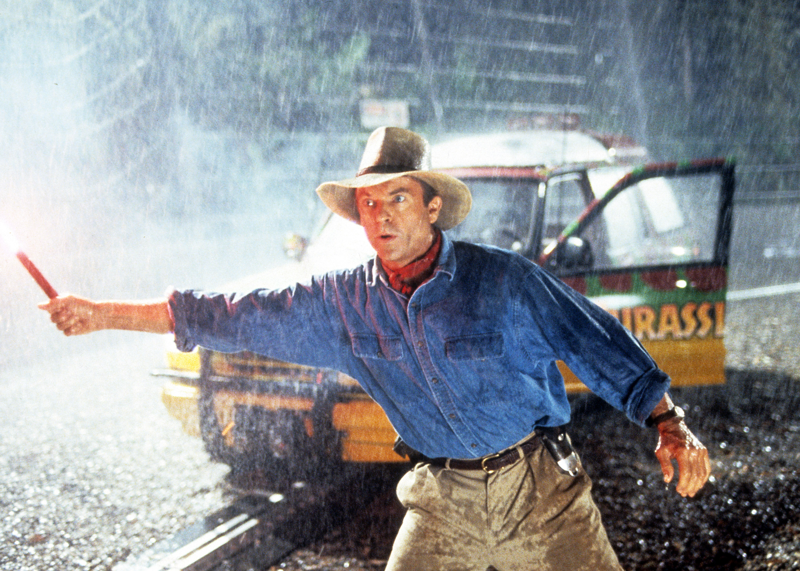 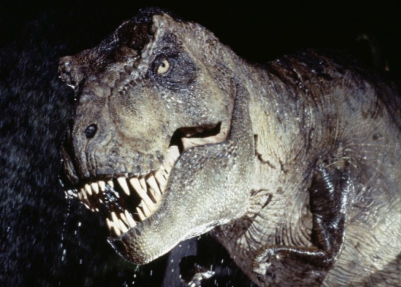Mediados de los 2000: “Her” (2013)
“Her” es una película de 2013 dirigida y producida por Spike Jonze. La idea del guion surge a principios de la década de los 2000, cuando Jonze leyó un artículo sobre una página web que permitía la mensajería instantánea con un programa de inteligencia artificial.
La película nos ubica en un futuro cercano (muy similar a la actualidad, teniendo en cuenta que la película es de 2013). Theodore es un hombre melancólico y solitario que está a punto de divorciarse, pero se niega a firmar los papeles. Trabaja en una empresa de escritura de cartas pero, irónicamente, él no sabe identificar y expresar sus propios sentimientos. Buscando evadirse de su soledad mediante placeres vacíos, se instala una aplicación de citas, pero nada parece satisfacerle. El marketing le convence de que la solución puede ser comprar una nueva inteligencia artificial que acaba de salir al mercado. Esta consiste en una asistente de voz que le realiza una serie de preguntas íntimas para formar una personalidad que conecte con él. La propia inteligencia artificial (IA) se presenta como Samantha y ambos empiezan a conversar y a conocerse mejor. Uno de los amigos de Theodore le consigue una cita (con una mujer real) pero este no busca comprometerse con nadie. Poco a poco, la intimidad con el robot va creciendo y su estado de ánimo va mejorando. La dependencia llega hasta tal punto que en una ocasión, Samantha no contesta a Theodore porque está actualizándose y él se altera. Cuando este se percata de que hay más gente que utiliza esa IA, le pregunta si habla con más personas, a lo que ella responde que habla con 8.316 más y está enamorada de 641 de ellas. Esto impacta a Theodore, pues ya no se siente único y especial, algo que para él Samantha sí que es, como podemos ver en la escena en la que Samantha se cuestiona hasta qué punto es real y si sus sentimientos también lo son o simplemente fruto de una programación, a lo que él responde: “Para mí eres real”. Finalmente, ambos se despiden, “rompen”, pues gracias a esta relación Theodore ha aprendido lo que es el amor real.
Este filme es una obra distópica basada en las emociones, representa las relaciones humanas (y la complejidad de estas) en un mundo dominado por la inteligencia artificial y las conexiones virtuales. Conocer a personas puede resultar una tarea que desgasta, y nos pueden asustar los sentimientos de verdad, pero no podemos dejarlos de lado. Precisamente, estos miedos están más presentes que nunca, en una sociedad en la que la inteligencia artificial ha avanzado a gran velocidad (dispositivos como Alexa, Siri o ChatGPT). Resulta curioso también la sofisticación de Samantha, que es consciente de su propia naturaleza, pero es bondadosa y sensible, sin ningún tipo de intención mala hacia los humanos (ni pensamientos de sustituirlos, pese a ser utilizada como novia de ellos, quitando este “puesto” a mujeres y hombres). Esta es sin duda una visión muy distinta a películas anteriores, cuyo uno de los principales temores era la iniciativa de los robots por sustituir a los humanos. Además, la mayoría de personas de la vida de Theodore aceptan esta relación con bastante facilidad (incluso acude a una cita doble con un compañero de trabajo y su novia con total normalidad), solo se producen reflexiones individuales sobre si esto es algo sano emocionalmente o no, pero a nivel social no genera ningún tipo de reacción mayor.
 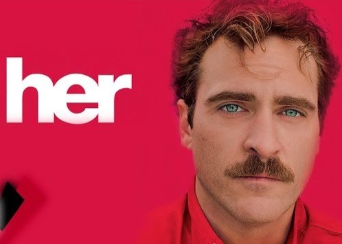
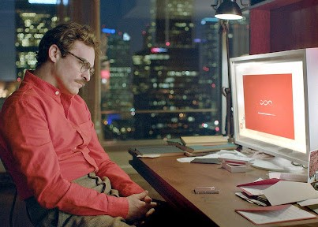
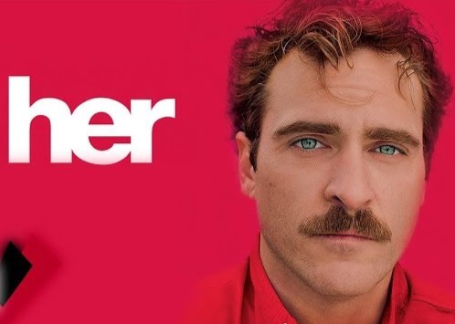
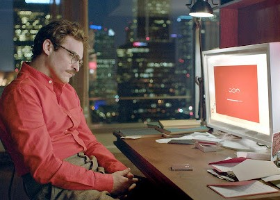
Conclusiones
El cine de ciencia ficción nos habla de nuestros miedos. Nos presenta un orden que se rompe a causa de una intromisión inesperada y en el viaje hacia encontrar la solución el espectador reflexiona sobre temas como la relación con “el otro”, la identidad, la relación entre ciencia y sociedad, los conflictos sociales y el comportamiento colectivo. Estos temas, sin necesidad de la aparición de alienígenas o elementos fantásticos, nos son conocidos, pues están presentes en nuestra cotidianidad. También refleja los cambios que se han producido en nuestra cultura (y por lo tanto en el pensamiento colectivo) en relación a estos temas a lo largo de los años, siendo siempre un factor clave los conflictos y sistemas políticos, los avances tecnológicos y los científicos en la creación de estos miedos y preocupaciones.
También demuestra el continuo miedo por el futuro, utilizándolo de ejemplo de cómo vamos a terminan destruyéndonos a nosotros mismos si no aprendemos y recapacitamos sobre nuestras decisiones del presente y los errores cometidos en el pasado.
El uso del género como reflejo de estos temores y aspiraciones sociales sigue vigente hoy en día, debido a la veracidad de las situaciones que plantea, permitiéndonos sentirnos identificados, a la vez que satisface nuestra imaginación mediante la creación de mundos y personajes desconocidos y extravagantes. Un claro ejemplo de ello es el reciente éxito en taquilla de películas como “Dune” (2021), “Dune: parte 2” (2024), “Los juegos del hambre: balada de pájaros cantores” (2023), “Star Wars: The Acolyte” (2024), etc. Muchas de ellas se tratan de remakes o continuaciones de sagas muy populares que también tuvieron mucho éxito en su momento, demostrando que el interés de los espectadores se sigue manteniendo. Considero que gran parte de la clave de este éxito es que se trata de un género cinematográfico que permite hacernos desconectar del mundo real, sumergiéndonos en otros imaginarios (más divertidos y estimulantes), pero sin dejar de lado nuestro criterio para reflexionar sobre temas muy diversos que nos afectan.